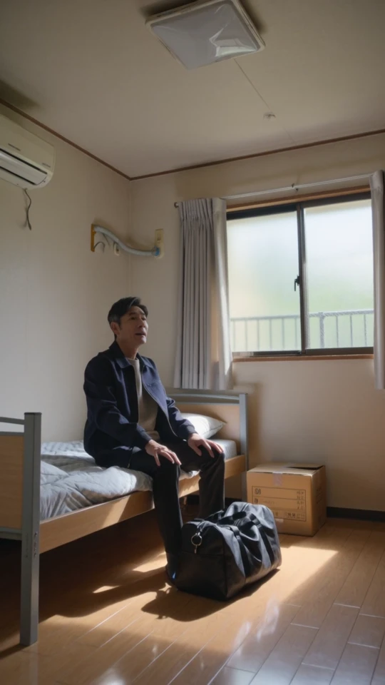

0:40Panoorin na may tunog01 / Tahanan at bagong simula matapos makalaya
May mauuwian.
May bagong simula.
Mula sa pagtanggi sa aplikasyon sa upa, patungo sa suporta at kapanatagan sa sariling silid.
Panoorin nang walang tunogBasahin ang iskrip sa Japanese
刑務所の門を出たとき、これからの暮らしが不安でした。
部屋を借りようと、不動産屋に行きました。
でも、事情を話すと、申し込みを断られてしまいました。
もう借りられるところはないのかと、途方に暮れました。
ルミライズでは、今の私の話を聞いて、一緒に部屋を探してくれました。
住む部屋が決まり、鍵を受け取ったとき、ようやく前を向けました。
今は、自分の部屋で、ほっとしています。
ここから、もう一度やり直したいです。